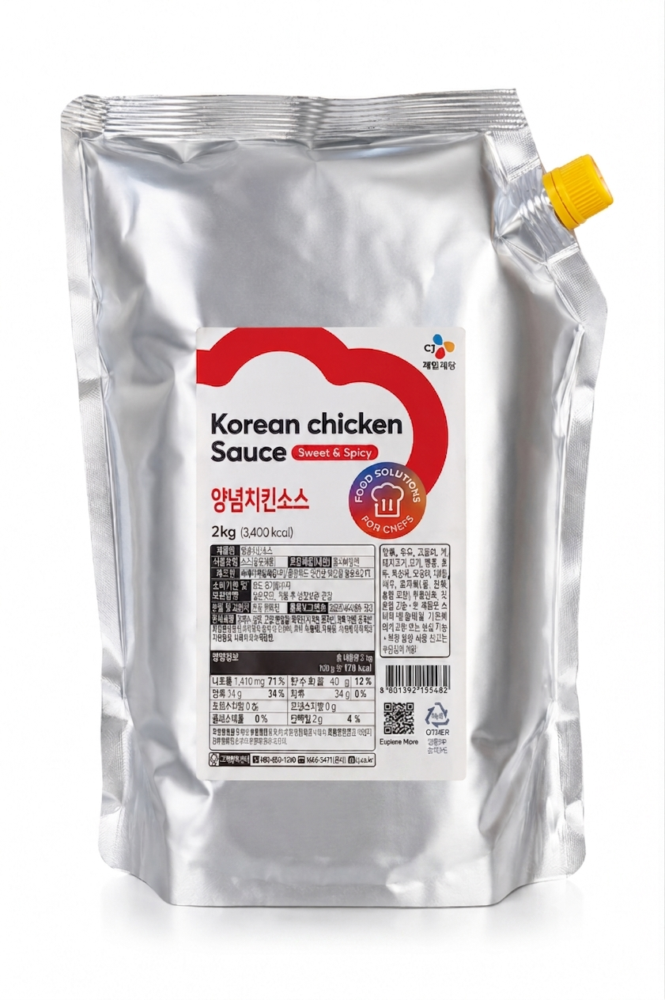
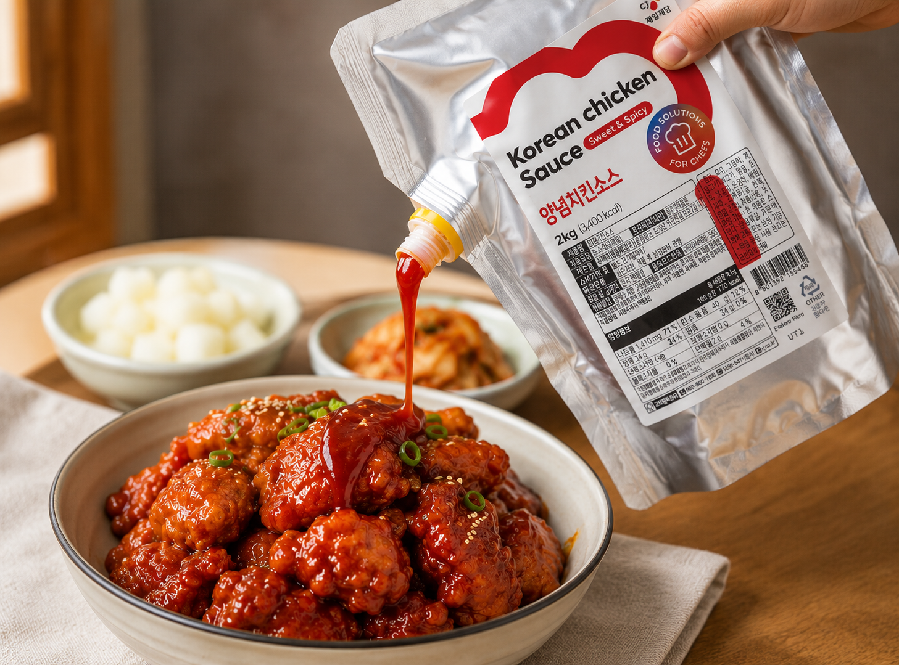
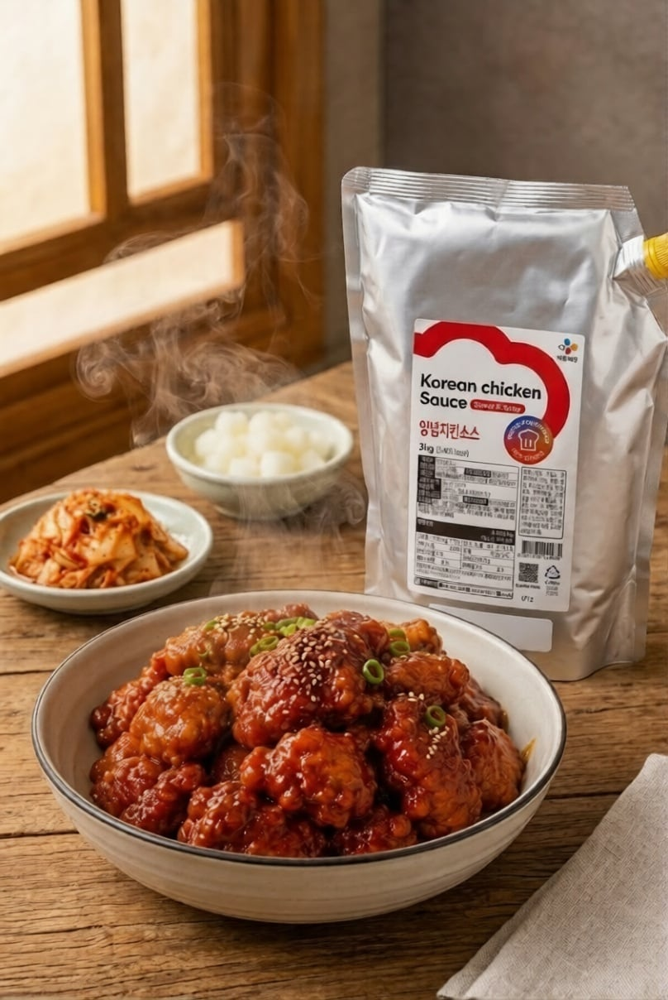

| Sos corean dulce-picant pentru pui, 2kg Pregătește legendarul pui prăjit coreean chiar la tine în bucătărie sau restaurant! Sosul Korean Chicken Sweet & Spicy (2kg) oferă echilibrul perfect între dulce și iute. Ambalajul generos cu dop este ideal pentru pasionații de street-food asiatic și bucătarii profesioniști. |  |
 | Transformă orice pui crocant într-o delicatesă asiatică irezistibilă! Acest sos premium dulce-iute îmbracă perfect fâșiile sau aripioarele de pui prăjit, oferindu-le o glazură lucioasă, lipicioasă și plină de savoare. Adaugă susan și ceapă verde pentru a recrea gustul autentic din restaurantele din Seul! |
| Sosul Korean Chicken Sweet & Spicy este secretul unui pui prăjit autentic și crocant! Cu o textură lucioasă și aromă intensă dulce-iute (Yangnyeom), acest sos premium în ambalaj generos îmbracă perfect preparatele, aducând gustul faimosului street-food din Seul direct în farfuria ta. |  |